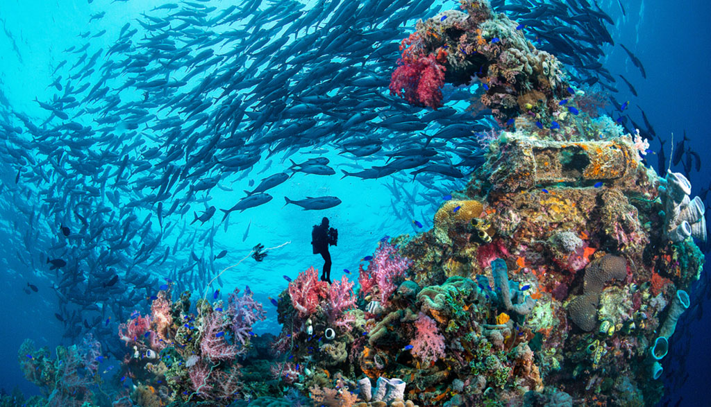

Keunikan Wakatobi
Wakatobi, sebuah kawasan yang terletak di Sulawesi Tenggara, merupakan salah satu destinasi wisata bahari terbaik di dunia. Keindahan alam bawah lautnya yang memukau, kekayaan budaya lokal, serta komitmen terhadap pelestarian lingkungan menjadikan Wakatobi tujuan wisata yang tidak hanya menarik tetapi juga bermakna. Berikut adalah beberapa keunggulan utama yang membuat Wakatobi begitu istimewa.
Surga Bawah Laut
Wakatobi dikenal sebagai salah satu lokasi menyelam terbaik di dunia. Dengan lebih dari 50 titik menyelam, kawasan ini menawarkan pemandangan bawah laut yang menampilkan keanekaragaman hayati laut yang luar biasa, mulai dari terumbu karang hingga spesies ikan langka.
Keanekaragaman Hayati
Terletak di pusat Segitiga Terumbu Karang Dunia, Wakatobi memiliki 750 spesies karang dari total 850 spesies yang ada di dunia. Ini menjadikan Wakatobi sebagai salah satu pusat keanekaragaman hayati laut global.
Budaya Lokal yang Unik
Penduduk lokal, terutama suku Bajo, dikenal dengan tradisi maritim yang unik. Kehidupan mereka yang erat dengan laut memberikan pengalaman budaya yang autentik bagi para pengunjung.
Keindahan Pantai
Pantai-pantai di Wakatobi, seperti Pantai Hoga dan Pantai Sombano, memiliki pasir putih bersih dan air laut yang jernih. Pemandangan ini menjadikan Wakatobi tempat yang sempurna untuk bersantai dan menikmati keindahan alam.
Ekowisata yang Berkelanjutan
Pemerintah dan masyarakat setempat berkomitmen untuk menjaga kelestarian lingkungan melalui dukungan terhadap pariwisata berkelanjutan. Langkah ini memastikan bahwa keindahan alam dan budaya Wakatobi dapat dinikmati oleh generasi mendatang.
Taman Nasional Wakatobi
Kawasan ini ditetapkan sebagai Taman Nasional dengan luas 1,39 juta hektar. Taman Nasional Wakatobi menjadi rumah bagi berbagai spesies laut dan terumbu karang yang dilindungi, menjadikannya salah satu aset berharga bagi Indonesia dan dunia.